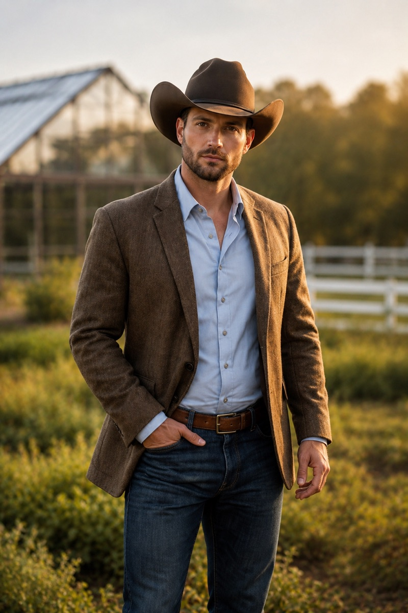

The Kingsleys of Cottonwood Ridge
Callum Kingsley
Rescue Me, Cowboy (Book 3) — Burned-out cattle rancher. Skeptic of all things woo-woo. Allergic to goats — and to sitting still.

At a glance
- Age34
- FromKindersley, Saskatchewan, Canada
- FamilyJake Kingsley's eldest (of three)
- Works asOrganic cattle rancher, specializing in regenerative grazing
- LivesOn ~600 acres of inherited ranchland, plus co-op grazing leases
- StatusSingle (at the start of his story)
Meet Callum
Callum carries the Kingsley legacy with quiet integrity — steady, competent, the calm one in a crisis. Get him tired, hungry, or surrounded by goats, though, and the sarcasm comes out fast. Three straight years of scaling his operation through drought, trade delays, and wildfire have left him frayed at the edges and badly in need of a break he'd never take on his own. Underneath the grit he's softer than he lets on: old western novels, a handwritten notebook of grazing rotations and wildflower sightings, and the faint smell of cedar and hay. What he's most afraid of is failing the land he inherited — or staying so busy keeping it profitable that he forgets why he loves it.
The look: Tall and athletic, built for long days of physical work. Dark hair and a close-trimmed beard under a brown felt hat, with steady brown eyes that size up a situation before he says a word. Dresses a notch sharper than the average rancher — a tweed jacket over an open-collared shirt — legacy money worn lightly, the way all the Kingsleys wear it.
What's regenerative grazing?
It's a way of raising cattle that works with the land instead of wearing it out — moving the herd in planned rotations so pastures rest, roots grow deep, and the soil rebuilds itself season after season. It sounds like a buzzword, which is exactly the kind of thing Callum can't stand — except he's living proof it's real work, done with a notebook and a lot of fencing, not a slogan.
The heart of his story
Callum comes to Cottonwood Ridge for a consulting gig — “a month, tops” — evaluating land for a grazing pilot, mostly because it's a lifeline disguised as work. His rental cabin shares a fence line with a goat yoga retreat run by a woman who talks to her animals, and he is allergic to the goats, the mantras, and all that relentless sunshine. Rescue Me, Cowboy is the story of a man who came for solitude and found something better — the discovery that he doesn't need a different life, just a more intentional one, and maybe someone to share it with.